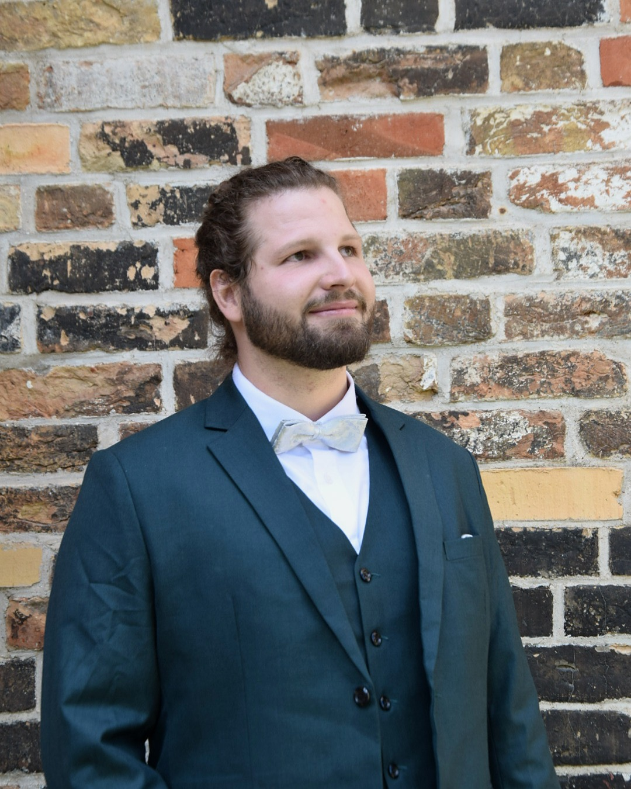
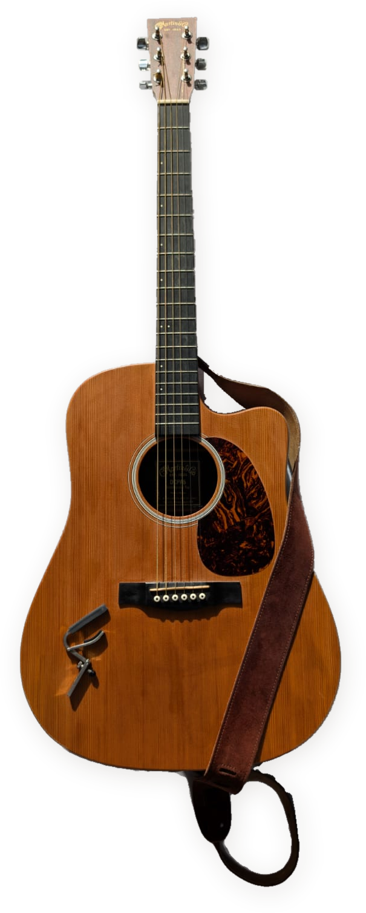

A letter from Lukas Anders

Lukas Anders · Photo by Paula Bülow
I grew up in Itzehoe with three grandmothers, two sisters and a huge family of aunts, uncles and cousins – that’s more than most people get, and I’m incredibly grateful for it. This close-knit family shaped my sense of solidarity and loyalty, and it taught me early on to recognise what is worth putting my energy into.
We played a lot of strategy board games as a family. They gave me an early love of thinking several moves ahead, a good deal of patience, and the understanding that losing a game is a lesson in itself: a chance to grow and to do better next time.
Ever since seventh grade, I’ve been fascinated by physics, maths and complex problems. My physics teacher at the time taught us that curiosity and hard work go hand in hand. My grandmothers taught me the other side of the coin: that calm, and even boredom, can lead to the greatest creativity. Both carried me through school, which I finished in 2013 with the best results in the science stream. More importantly, this mindset helped me find people who look at the world with the same enthusiasm.
Studying physics
This curiosity took me to Rostock to study physics, where I quickly realised how much more there was to learn. The first semesters opened up a wide range of subjects and fuelled my ambition to understand them properly, and being surrounded by ambitious people kept me moving forward. During this time I made some of my best friends, partly through my work on the Physics Students’ Council. To this day, we are bound together by our shared experience of studying physics and plenty of unforgettable memories.
As the semesters went by, my view of the world kept widening. I took full advantage of the university and attended courses in physics, mathematics, medicine, chemistry, biology, Spanish and history. I loved carrying ideas from one subject into another, or simply trying something new.
After a Bachelor’s thesis in theoretical quantum optics, I chose an interdisciplinary Master’s thesis with the Department of Ophthalmology at Rostock University Medical Centre. There I developed and characterised a Brillouin measurement setup and used it to study eye lenses ex vivo. The experiment had plenty of setbacks, and I kept having to come up with creative solutions until, by the end of my Master’s, it worked. That experience convinced me to take on a new challenge: a PhD in chemistry, in a field where physics meets environmental and climate research and human health.
Not every chapter of those years was easy. Some of the hardest moments taught me what really matters, and to make the most of the time I have.
Ship emissions and machine learning
When I started my PhD, I had a background in optics and quantum physics and very little idea what comes out of a ship’s chimney. The question sounded simple: if you catch a single particle from the exhaust, can you tell which fuel it came from? Answering it took the better part of five years.
Our instrument was a laser-based mass spectrometer that analyses particles one by one, thousands of them per hour, in high vacuum. It is a remarkable machine, and it is also temperamental. I learned to calibrate it, to design new parts for it and follow them through the workshop, and to repair it on site. During a measurement campaign in Kuopio, Finland, one of the lasers failed halfway through. I had to completely rethink the trigger system to get the setup running again. It took the whole night, but by morning it worked.
The campaigns also took me to a research engine in Rostock and to the DHL hub in Leipzig, where we tested whether the same method could detect hazardous substances in shipments. Afterwards came the part nobody photographs: making sense of the data. A single campaign produces far more spectra than anyone could look at by hand, so I wrote Python and MATLAB code that used machine-learning algorithms (k-means, ART-2a and DBSCAN) to sort the particles into groups with similar chemical signatures and to work out which features set one fuel apart from another. For my data, ART-2a turned out to work best. The hardest part was rarely the algorithm itself. It was checking whether a pattern the model found was real chemistry or just an artefact of the instrument.
Two results still make me glad I stayed with it. We found patterns in the particles that reveal which fuel a ship is burning, and we used them to pick out the plume of a single passing ship from 15 to 20 kilometres away. We also showed that the wet scrubbers many ships now use remove sulphur, but leave most of the finest particles in the air.
The work ended in a doctorate and five papers. What I took with me goes beyond ships. A PhD teaches you to manage your time, to find your way between different interests and opinions, and to tell essential priorities from non-essential ones through trial and error. Most of all, I saw how much a united team can achieve when everyone works towards the same goal.
Measuring language models
At MIMIR in Tübingen I turned the same habits to a new question: which language model should handle which task, once cost, response time and data protection count? The most capable model is not always the right choice, and the cheapest one is not always good enough.
I built a benchmarking framework in Python that gives realistic business tasks to four commercial and open-source models: procurement decisions for an electric vehicle fleet and for software licences, proofreading a CV, and translating a text into ten languages. Rule-based pre-scoring and a structured record of every run make the results comparable and reproducible. Alongside it, I designed a taxonomy that describes each task by the capabilities and operational requirements a model needs, as the basis for an intelligent router.
Much of it felt familiar. Models, like instruments, rarely behave exactly as the documentation suggests, and a good comparison depends less on the tools than on asking the right question and checking the answer honestly.
Silence and sound
I started with classical guitar in 2007, and the guitar has come with me through school, university and my PhD. Today I mostly play a steel-string acoustic.
When I’m stuck on a problem, I often put it aside and play for a few minutes. More often than I can explain, that is when the solution turns up. My grandmothers would probably call it the useful kind of boredom.
Most of the time I improvise rather than play pieces from start to finish. One exception is “Ocean” by John Butler, which I keep coming back to.
Whenever I play, my head gets a little quieter, and usually a little clearer.

What comes next
I’m looking for a new challenge that combines the things I’m most interested in: artificial intelligence, new ideas that transform existing practices, and protecting the environment and climate. I also enjoy the process of developing an idea further, thinking a few steps ahead about what it could mean and finding an approach that nobody has tried yet when the obvious one doesn’t work.
After many years in the laboratory, I am ready to apply my knowledge in the real world. I want my work to benefit people and the environment we share, and I’d like to help good new ideas get off the ground, whether they are my own or someone else's.
There is still a lot I want to learn, and I enjoy doing so in good company: with people who ask questions, disagree openly, and share what they know. If that sounds like your team, or if you simply want to exchange ideas, I’d be glad to hear from you.
If you’ve made it this far, thank you for taking the time to get to know me.
I hope our paths cross one day.
Lukas Alexander Anders
Rostock, October 2026
Credits
This letter tells my story, but it was never mine alone. It was shaped by the people who have been part of my life.
My three grandmothers, who taught me to stay curious and showed me that a little quiet goes a long way.
My two sisters, who have always been on my side, whatever I was setting out to do next.
And my friends, from school, from the physics and from the lab, who shared the good days with me and helped me through the hard ones.
Many others have left something with me too: teachers, colleagues and supervisors who shared what they knew and gave me room to try things, and people I met by chance who changed the way I see things.
To all of you: thank you. More than I can put into words.